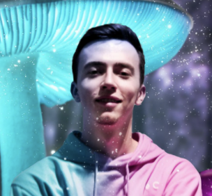
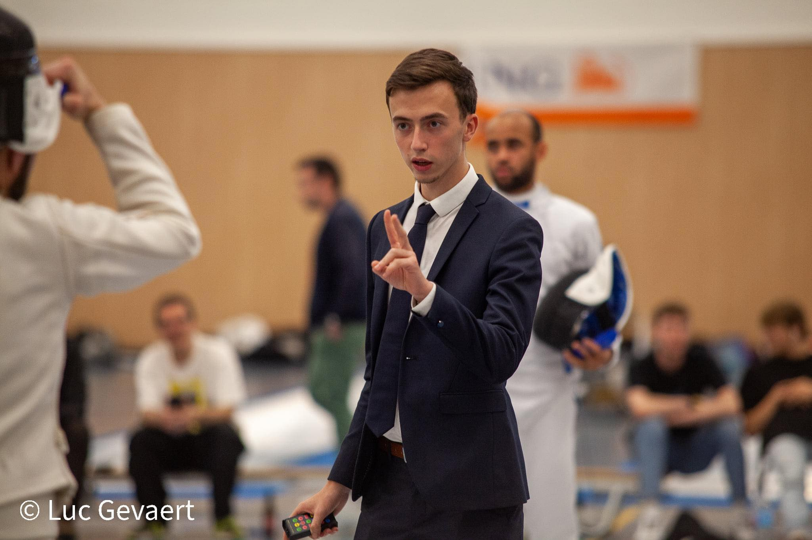
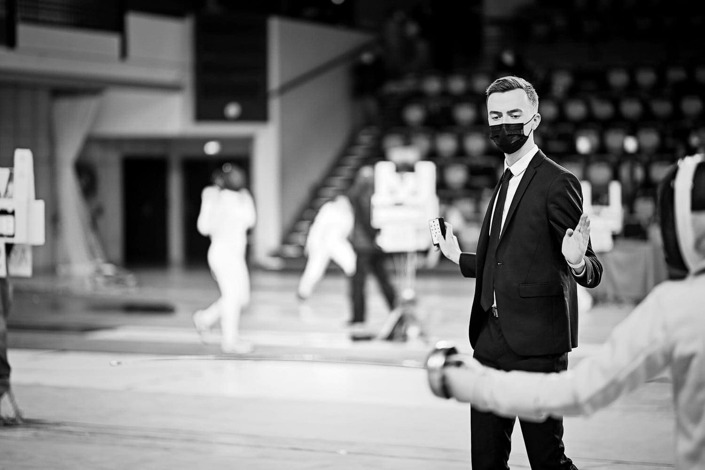

🔹Welcome to Clément's profile🔹
Currently in my 2nd year at the IESEG School of Management in Lille.
WINDOWMOTICInvolvement in associations ✨


I joined last year the Bureau des Arts (BDA) Wonderl'ART of IESEG Lille as treasurer. A real opportunity for me to illustrate myself alongside artists and talented people thanks to the application of my skills.
International Referee 🤺
 For a few years now, I have been officiating at fencing competitions (epee) as an international fencing referee. Being able to referee hundreds of competitions in France and around the world is a unique opportunity!
Football's culture ⚽
Real soccer fan since 2008, I have been interested in it for a long time by going back in time. Today, the taste of sport and the environment that surrounds it, gave me the desire to work in this field after my degree at IESEG.